Vandaag zijn de lab-weken begonnen. Om 9:00 uur werden we verwacht in The Dutch Factor in Zoetermeer en kregen we introductie van Chris. Na de introductie werden de groepen en de onderwerpen bekend gemaakt. Na de eerste kennismaking hebben we onze werkplek voor komende 10 dagen gereed gemaakt en zijn we gelijk aan de slag gegaan. We zijn begonnen met een brainstormsessie. Hierbij zijn we opzoek gegaan naar de trends op het gebied van wearables en hebben we hier vervolgens individueel een mindmap bij gemaakt. Nadat iedereen dat gedaan had, hebben we ze besproken en een nieuwe complete mindmap gemaakt. Vervolgens zijn we gaan brainstormen en hebben we een concept bedacht. Dit concept is nog een opzet van het concept, maar werken uitgewerkt tot een concreter concept. We zijn toen aan de slag gegaan het een procesbeschrijving. Hierin staat het plan van aanpak. Op dat moment kwam Lisa ons laatste teamlid binnen en hebben we haar ons concept verteld. Zij heeft zelf ook een mindmap gemaakt en we zijn met haar ideeën opnieuw naar het concept gaan kijken en hebben deze aangevuld. Nadat het concept aangepast was, zijn we gaan schetsen om te kijken hoe we ons concept willen uitwerken. We hebben gekeken hoe we morgen verder kunnen en wat we nodig hebben om ons concept uit te werken. De taken zijn verdeeld en de eerste dag was voorbij. Aan het eind mochten we ons concept aan de hele groep presenteren.
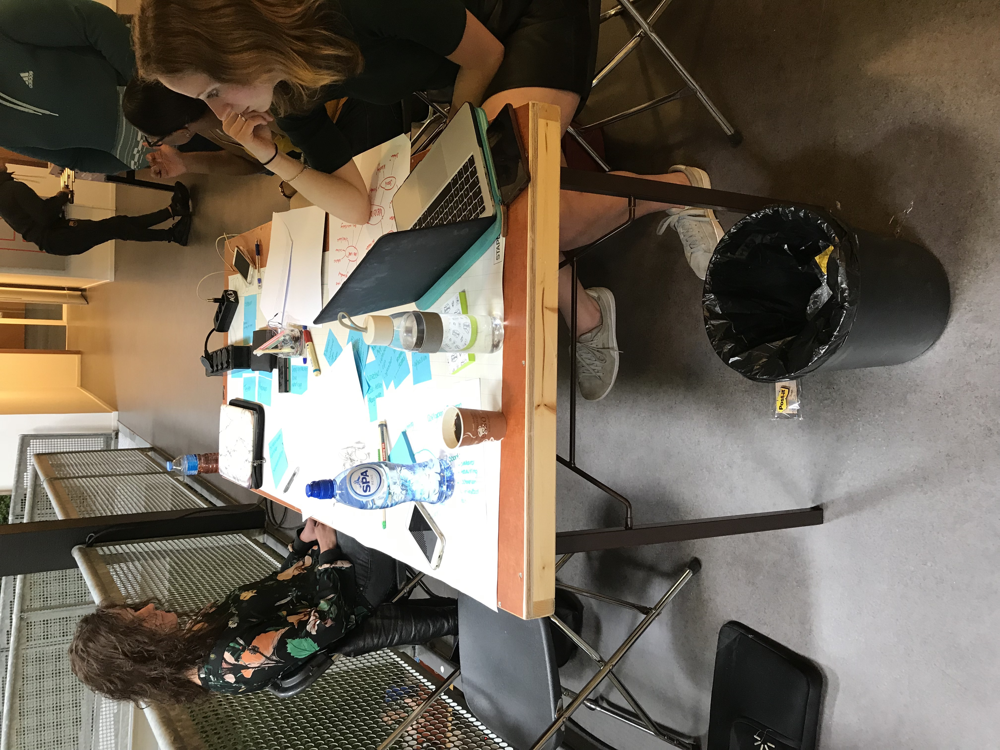 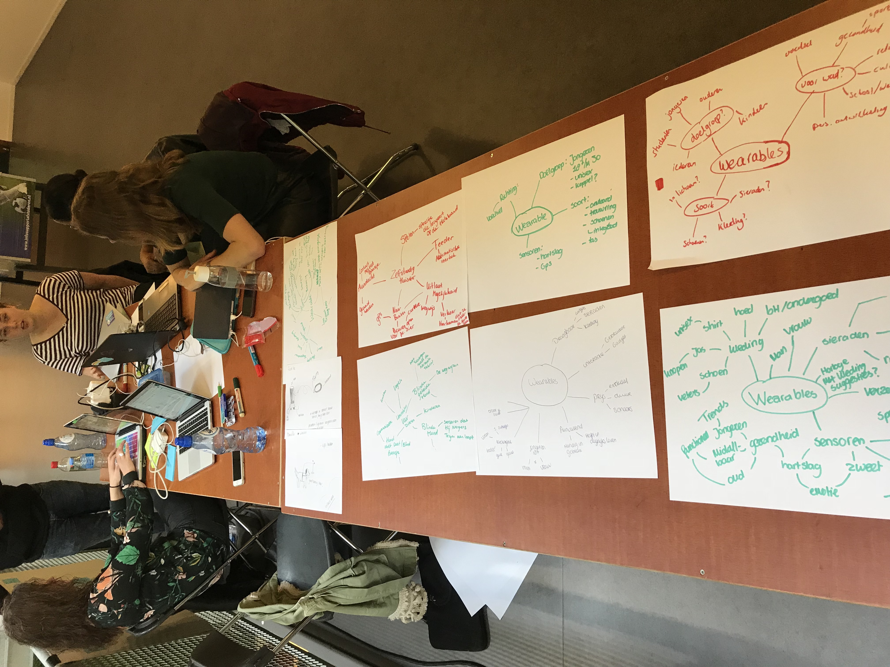Vandaag begonnen we bij ons to-do boord om te kijken wat we gister gedaan hebben en wat we vandaag gaan doen. Zo hebben we besproken dat we gister een goede dag hebben gehad en vandaag aan de slag gaan met het experimenteren met arduino. Zo heb ik zelfonderzoek gedaan naar verschillende manieren om een laserlampje te maken. Deze moet dienen als speelgoed om de kat zelfstandig te maken. Via YouTube heb ik gekeken naar welke bewegende lasers er al bestaan en hoe wij dit kunnen opbouwen. Hierbij heb ik eerst gekeken wat we zelf al aan materiaal hebben en wat we vandaag moeten bestellen om morgen verder te kunnen. Via het internet heb ik verschillende codes bekeken die we misschien konden gebruiken, uiteindelijk ben ik aan de slag gegaan met de code die we al eens voor de workshop opdrachten hebben gebruikt. Met deze code heb ik het voor elkaar gekregen om twee motoren via een for loop te laten bewegen. Vervolgens ben ik samen met Nienke aan de slag gegaan met een NFG tag. We zijn samen via YouTube op zoek gegaan naar een filmpje die ons kon helpen de NFG tag te installeren. Het duurde even en ging een keer mis, maar uiteindelijk hebben we het voor elkaar gekregen van de NFG tag het deed. Nu is het nog de uitdaging om de NFG tag te koppelen aan de motoren. Het is de bedoeling dat als het dier in de buurt van de NFG tag komt met zijn halsband, dat op dat moment de laser aan gaat voor een bepaalde tijd. Dit was lastiger dan gedacht. Gelukkig was er een bekende van Lisa die verstand heeft van arduino. Hij heeft ons geholpen en samen hebben we het voor elkaar gekregen de NFG tag en de motoren samen te laten werken. Vervolgens was de dag al zo goed als voorbij en hebben we samen met andere groepjes materialen besteld die we nodig hebben om morgen verder te kunnen. Dit was voor ons alleen een laser lampje. Ook hebben we gekeken wat we nodig hebben om morgen de laserlamp af te maken. Het was een leuke, zware, maar productieve dag.
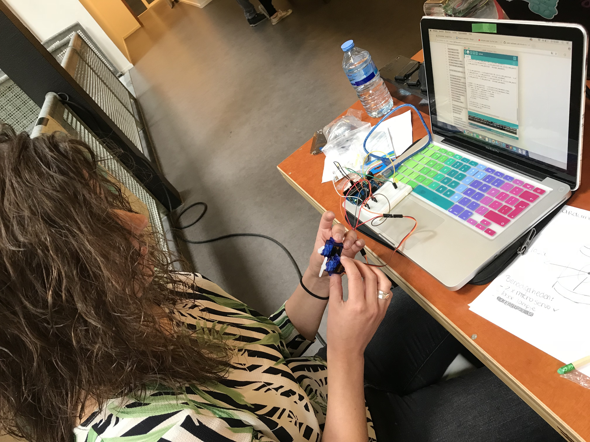 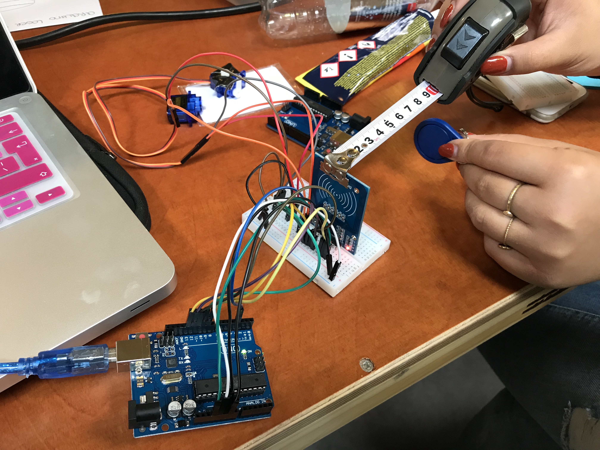Vandaag begonnen we net als gister met zijn allen bij ons to-do boord. We hebben besproken wat er gister gedaan is, wat er vandaag gedaan moet worden en hoe het afgelopen dagen is gegaan. De taken zijn verdeeld en er zijn extra taken toegevoegd aan het to-do boord en de dag kon beginnen. Omdat ik nog wachtte op een laser die gister besteld is, was het een beetje lastig om ergens aan te beginnen. Daarom zijn Nienke en ik samen een manier gaan bedenken hoe we de laser in zullen pakken. We hebben wat schetsen gemaakt en hebben een lijstje gemaakt met dingen die we daarvoor nodig hebben. We zijn toen samen op de scooter naar de Action gegaan om die spullen te halen. Onderweg waren we een klein beetje verdwaald, maar als snel hadden we de goede weg te pakken. Toen we weer terug waren heb ik gewacht tot het laserlampje geleverd werd en heeft iemand deze voor mij gesoldeerd. Toen kon ik aan de slag om de laser aan de arduino code toe te voegen. Het lukte al redelijk snel om hem werkend te krijgen, alleen als de NFG tag contact maakte, ging laser juist uit i.p.v. aan. Na wat proberen lukte het nog steeds niet en heb ik hulp ingeschakeld van dezelfde jongen als gister. Hij heeft geholpen om de laser aan te laten gaan als de NFG tag contact maakt, net als de motoren. Nu is de code voor de laser voorlopig klaar en kan er morgen aan de slag gegaan worden met de verpakking van de laser. Op het moment dat de hele code werkte, was de dag al voorbij en tijd om op te ruimen. Het was weer een supersnelle en productieve dag.
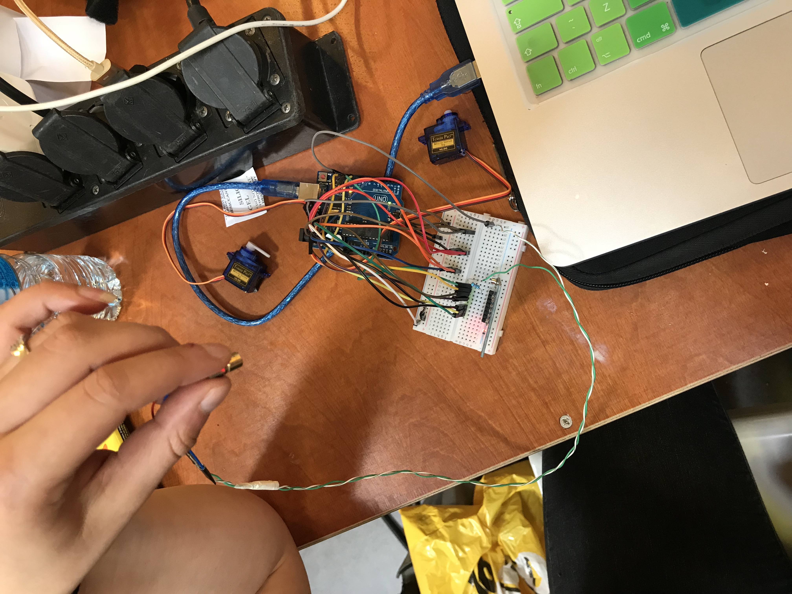
Vandaag begon een beetje rommelig. De een had vertraging, de ander file en nog iemand had les. Toen we bijna compleet waren zijn we weer gaan kijken wat we gister gedaan hebben en wat we vandaag gaan doen. Ik zou zelf samen met Nienke doorgaan met het bouwen van het prototype van de laserlamp. We zijn aan de slag gegaan met het bouwen van een tafel voor in de doos waar de laser op geplaatst gaat worden. Ondertussen hebben we de doos beplakt met een soort kurk. Zo kan de laser gebruikt worden als decoratie voor in de woonkamer. Om 13:00 kwam er een gast spreker die vertelde over het bedrijf waar hij werkte en welke projecten zij hebben gedaan. Dit waren hele gave projecten en het was een interessant verhaal. Daarna zijn we weer aan de slag gegaan met het in elkaar zetten van de laser. Het tafeltje was droog en we konden de doos gaan inrichten. Het was veel passen en meten, maar het is uiteindelijk gelukt. Toen was het tijd om te gaan testen. Kijken of de laser het nog steeds deed, na wat kabels goed aan te drukken deed de laser het. Wat nu alleen nog moest gebeuren was een gat maken in de deksel, zodat de kabel met de stroom eruit kon. Toen we de doos dicht wilde doen, kwamen we erachter dat de laser kapot was gegaan. Er was een kabel losgeschoten. Dit wilde we gaat solderen, alleen er stonden al heel veel mensen in de rij. Dus hebben we ervoor gekozen om dit morgen te doen en voor de zekerheid een nieuw lampje bij te bestellen. Ik moest vandaag zelf een uurtje eerder weg omdat mijn auto gemaakt was en klaar stond bij de garage. De garage sluit om 5 uur en ik moest eerst nog naar huis om de leenauto op te halen. Morgen gaan we de laser helemaal perfectioneren.
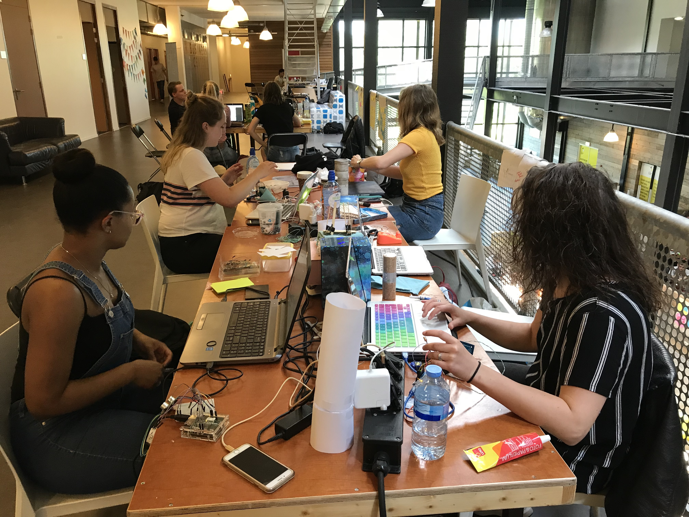 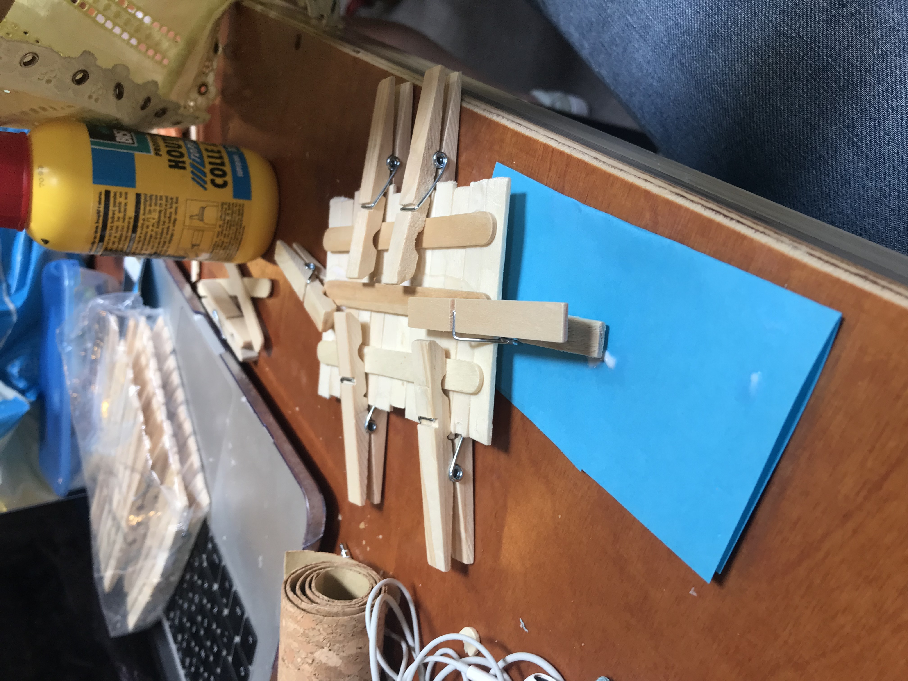Vandaag begon wat minder leuk dan normaal. Chris was niet zo blij en liet duidelijk merken dat hij niet tevreden was. Er zijn mensen die veel te laat komen en eerder weg gaan om de bus te halen. Hij liet duidelijk merken dat dat niet de bedoeling is, gelukkig hoef ik mezelf daar niet toe aangesproken te worden. We moesten als groep even bijkomen van deze toesprak en zijn dus iets later begonnen met werken. Toen we eenmaal aan de slag gingen, hebben we eerst gekeken wat we gister gedan hebben en wat we vandaag gaan doen. Vandaag ga ik weer aan de slag met de laser, om die helemaal af te ronden. We hebben eerst de doos helemaal gereed gemaakt en zijn vervolgens met de code aan de slag gegaan. We willen graag de laser langzamer laten bewegen, maar dit lukte niet. Daarom hebben we de hulp ingeschakeld van een oudere student die ons komt helpen. Om 13:00 kwam Peter van der Putten een gastcollege geven. Na het college gingen weer verder aan de code. Het was een hoop gedoe en er moest een hoop veranderd worden. Die jongen die ons hielp, hielp ons wel super goed. Helaas hebben we het nog niet voor elkaar gekregen dat hij helemaal klaar is. Maandag moeten we de motoren los van elkaar koppelen omdat ze nu in serie geschakeld zijn. Als ze dan parallel zitten, kunnen we ze beide los van elkaar bedienen en kan de laser een patroon afleggen. Ik kijk er erg naar uit dat we de laser volledig kunnen afronden. Dan gaan we ook kijken wat nog meer gaan maken voor het zelfstandige huisdier, maar eerst weekend!
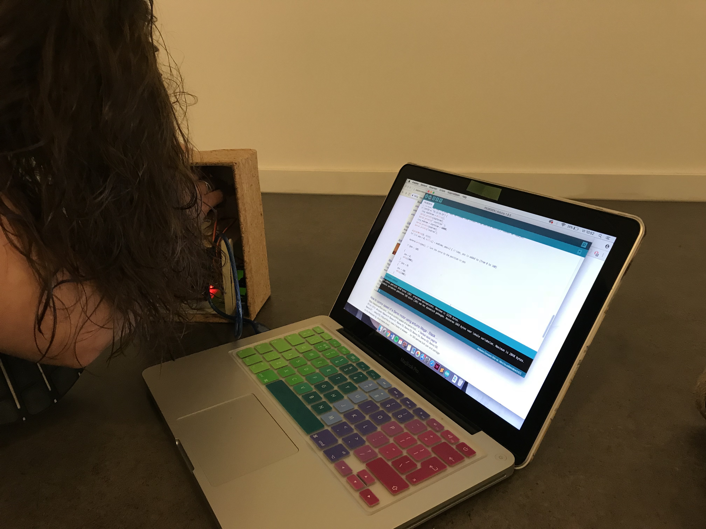 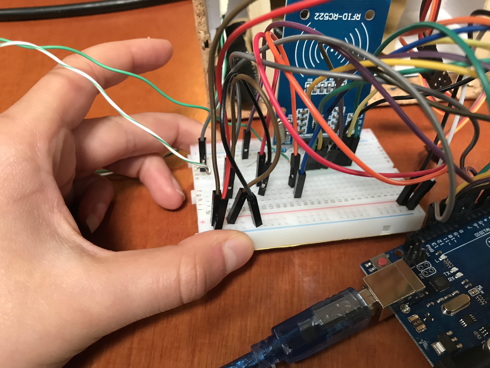Vandaag zijn we beginnen aan de tweede week van de lab-weken. We begonnen weer met een korte opstart door Chris. Vervolgens hebben we al onze spullen gepakt en moesten we eerst even bijkomen van het weekend. Toen zijn we aan de slag gegaan met waar we vrijdag mee geëindigd zijn. Lisa was iets later, dus we hebben iets later besproken waar we gebleven waren en wat we vandaag weer gaan doen. Nienke en ik zijn aan de slag gegaan met de code van de laser van vrijdag. We hebben eerst een servo motor verplaatst en losgekoppeld van de andere servo. Samen met dezelfde jongen als vrijdag, hebben we de code vervolgens zo aangepast, dat ze nu allebei los van elkaar kunnen bedienen. We waren supertrots dat hij nu eindelijk werkte zoals we willen. Nu is het tijd om alles vast te solderen. Na een korte pauze zijn we aan de slag gegaan om zoveel mogelijk vast te maken. Helaas kunnen we hem vandaag niet helemaal afronden omdat we nog wat onderdelen missen. Deze hebben we besteld en komen morgen. We hebben alle kabels die we vast konden maken, vast en vervolgens getest of alles nog werkt. Ja het werkte allemaal nog, dit was een hele opluchting. Helaas liet er daarna een kabel los, deze zullen we morgen weer opnieuw solderen zodra we de rest van de onderdelen ook binnen hebben. Daarna was het weer even tijd voor ontspanning, een klein potje tafeltennissen kon geen kwaad. Heb natuurlijk wel gewonnen. Vervolgens was er nog een beetje tijd over. Ik ben aan de slag gegaan met het maken van een aftermovie. Ik heb alle filmpjes die afgelopen week gemaakt zijn verzameld en ben bezig er een leuk filmpje van te maken met leuke achtergrondmuziek erop. Per dag ga ik de beelden die er gemaakt zijn toevoegen zodat we vrijdag een leuk filmpje hebben. En toen was het alweer hal vijf. Snel opruimen en de dag afsluiten en hup naar huis. Het was weer een leuke, productieve en snelle dag.
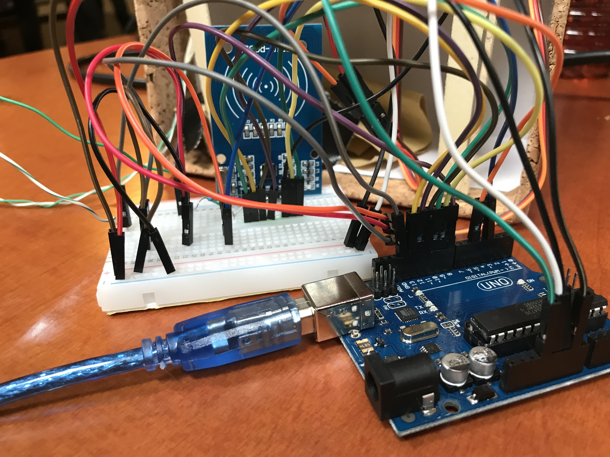 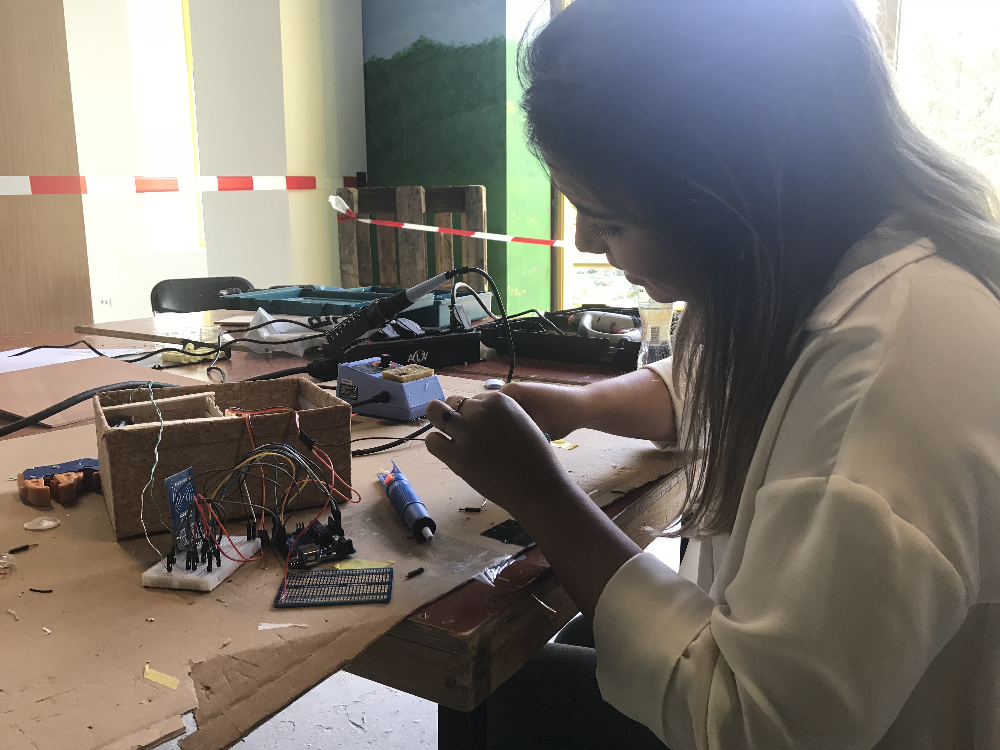Vandaag begon de dag weer zoals elke dag. Samen hebben we besproken wat we gister gedaan hebben en wat we vandaag gaan doen. Hoe mijn dag eruit zou komen te zien hing af van hoe laat de post bezorgd zou worden. Daarom ben ik begonnen met het filmen van elk teamlid. Dit willen we gebruiken in ons filmpje om iedereen aan de bezoeker voor te stellen. Deze heb ik vervolgens gemonteerd in het filmpje. Om het filmpje compleet te maken, doet muziek het ook altijd goed. We hadden al 2 nummer, maar een 3e kan geen kwaad. Na wat onderzoek had ik een geschrikt filmpje gevonden. Nu is het de uitdaging om die minuten nog te vullen met beeld. Omdat we afhankelijk zijn van de post, hebben we een aantal keer nagevraagd of het al geleverd was. Helaas duurde dit best lang. In de tussentijd hebben we de kabels van de laser kunnen herstellen die afgebroken waren. Vervolgens was het een kwestie van wachten tot dat de postbode was geweest. En yes, daar was het pakketje dan. Nienke en ik konden samen aan de slag om de laser af te ronden. Helaas duurde het langer dan verwacht. Het was de bedoeling om de arduino kit aan een stekkertje te koppelen. Draad voor draad moesten deze aan elkaar gesoldeerd worden. Omdat we er laat aan konden begonnen door de post, hebben we het niet voor elkaar gekregen de laser volledig af te ronden. Morgenochtend gaan wij als eerst aan de slag om de laser volledig te solderen en af te ronden. Dan kan ik hem morgen meenemen om met mijn kat Lily te testen. Daar heb ik onwijs veel zin in, ben benieuwd hoe ze reageert.
vandaag hebben we besproken wie wat we gister hebben gedaan en wat we vandaag. Voor ons was het duidelijk, wij hebben een missie om de laser volledig af ronden. Daarom zijn we al snel aan de slag gegaan. Omdat het best gepriegel was, heeft er een hoop tijd in gezeten. We waren zo blij dat alles gesoldeerd was, maar toen het testen…. Bij het testen kwamen we erachter dat de laser het niet meer deed. We konden wel zien dat het systeem het deed, want de lampjes brandde. Alleen gebeurde er niks als we de sensor erlangs haalde. Dit was een zware tegenvaller en moesten we kijken waardoor het kwam dat de laser het niet meer deed. We kwamen er als snel achter dat de kabels wel op de goede plek zaten, dus moest het zijn dat er ergens kortsluiting ontstond. Gelukkig was dit ook het geval. Sommige verbinden raakte elkaar net, waardoor de kortsluiting ontstond. Dit konden we gelukkig makkelijk herstellen en de laser deed het weer. Om de laser nog steviger te maken hebben we elk onderdeel aan elkaar gelijmd. Het bleef spannend of de laser het bleef doen, maar gelukkig wel. Nu was het nog een kwestie van alles in de doos stoppen, vastplakken en de doos goed afsluiten. De door is nu klaar om met mijn kat te testen, dus dat ga ik vanmiddag doen. Omdat we zo lang aan de laser gezeten hebben, vloog de dag voorbij. We hebben met de groep nog een tekst gemaakt voor de poster en ik ben nog bij andere groepen gaan kijken hoe het bij hun gaat. Ben erg blij dat de laser nu volledig afgerond is!
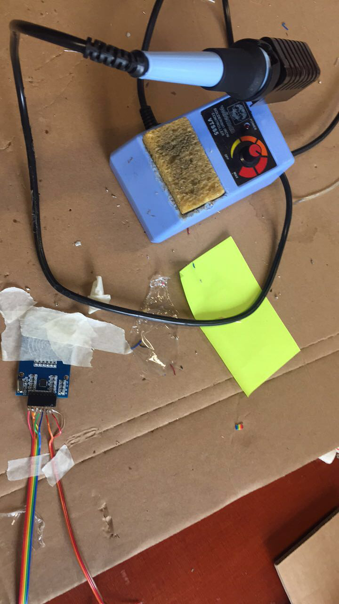 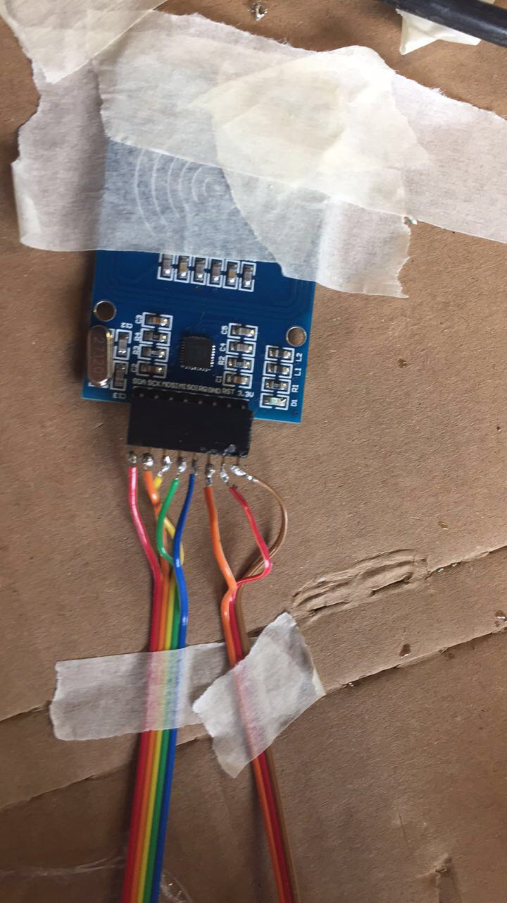Vandaag zijn we begonnen het met opruimen van onze werkplek. We hebben de posters van de muur afgehaald, de stoelen naar beneden verplaatst en de tafels terug in de kar gezet. We hebben onze eigenspullen verplaatst naar de plek waar we morgen gaan exposeren. Al zou wisten we wat we waar wilde hebben en hebben we een lijstje gemaakt met wat we nog nodig hadden om alles morgen te kunnen laten werken. Eerst ben ik aan de slag gegaan met het maken van een filmpje van de laser. Deze heb ik gister thuis getest met mijn kat en hier heb ik beeld van gemaakt. Dit filmpje willen we morgen tijdens de expositie laten zien. Met een leuk muziekje eronder maakt het dit filmpje helemaal compleet. Daarna ben ik samen met Nienke op de scooter naar de action geweest om de laatste benodigde spullen aan te schaffen. De spullen zijn binnen en nu kunnen we ons volledig gaan voorbereiden op morgen. Ik heb nog even goed naar de filmpjes gekeken, gekeken of alle beelden erin zitten en dat de overgangen kloppen. Morgen gaan we ook nog filmen en dat zal ik er later nog instoppen. Toen ben ik samen met Nienke nog gaan solderen. Mirthe moest eerder weg, dus die kon het niet meer doen. De kabels van haar harnas voor de hond waren losgegaan. Omdat we er laat aan begonnen en het eerst een hele zoektocht was om aan soldeertin te komen, hebben we het helaas niet voor elkaar gekregen om het vast te maken. Daarom gaan we morgenochtend meteen ervoor zorgen dat het goed vastzit. Ik heb zin in morgen en ben erg benieuwd wat de andere groepen hebben gemaakt.
Vandaag is de laatste dag van de lab-weken. De opening ging vandaag niet door, dus we konden rustig aan de slag. We zijn begonnen met het klaarzetten van alle onze producten. Dit was snel gedaan omdat we alles gister al best het een en ander klaargezet. Alleen nog wat lampje en was extra schilderijen en alles was ready. Vervolgens ben ik aan de slag gegaan met het afronden van het filmpje omdat we vandaag nog wat filmpjes hebben gemaakt en gaan maken die in onze aftermovie komen. Daarna hebben we samen de tafel opgeruimd, zodat we nu alleen nog onze studio. Daarna was het wachten tot dat de pizza geleverd worden. De pizza’s waren heerlijk. Vervolgens zijn we bij onze woonkamer gaan staan en wachten tot dat de eerste gasten kwamen. Het werd al gouw lekker druk en om de beurt gingen we ons concept uitleggen en laten zien. Mijn ouders, broertje en zusje kwamen ook langs. Samen ben ik met hun een rondje gelopen om te kijken wat de andere groepen gemaakt hadden. Ze vonden het er leuk. Natuurlijk moest er ook nog een potje getafelvoetbald worden. Nadat ze weer wegwaren ben ik teruggegaan naar mijn plek. Op een gegeven moment werd het wat rustiger en konden we een beetje bijkomen van deze drukke dag. Om 8 uur waren de meeste mensen wel weg en na een korte bijeenkomst was het tijd om alles op te ruimen. We waren snel klaar en hadden de spullen verdeeld. Ik mocht de laser mee naar huis nemen voor mijn kat, superleuk! Nadat iedereen klaar was, was het tijd om met zijn alle af te sluiten en lekker naar huis te gaan. Wat was het een lange, vermoeiende, maar indrukwekkende en leuke dag.
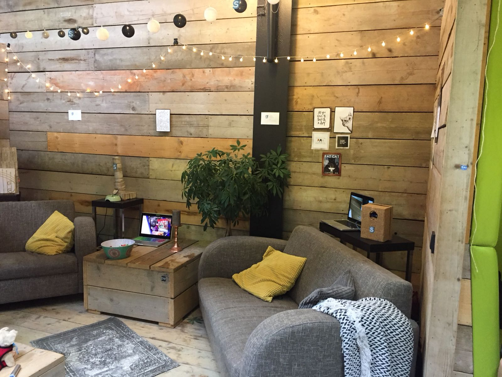 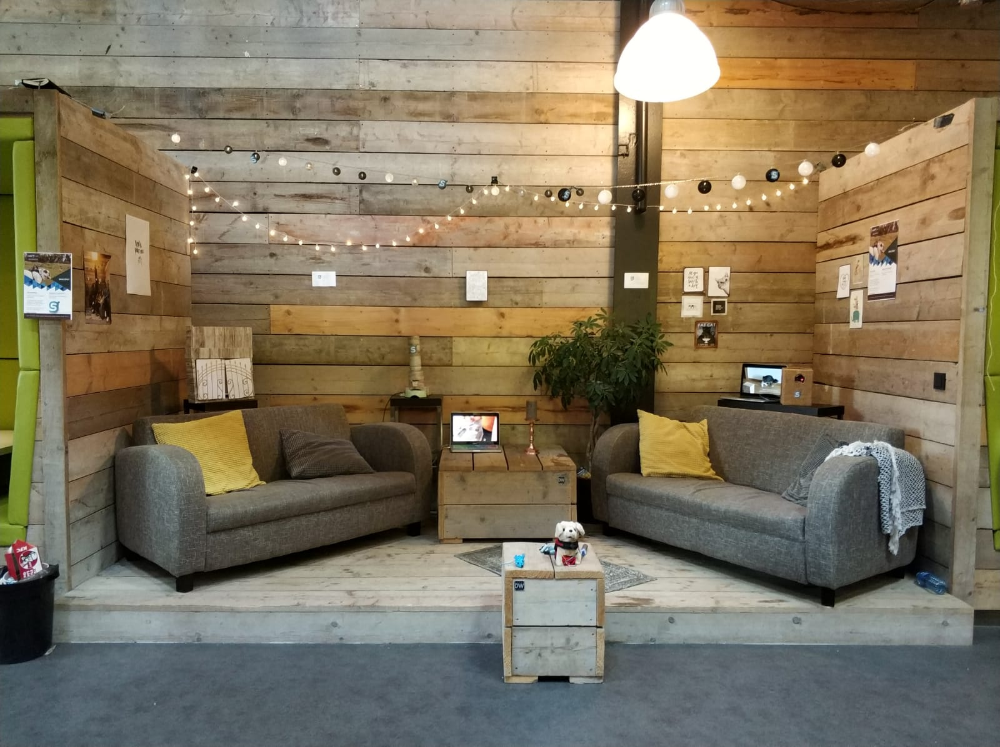* Grotendeels van de foto's zijn gemaakt mijn telefoon. Een aantal foto's zijn met toestemming van Lisa, Nienke, Mirthe of Kisha geplaatst.